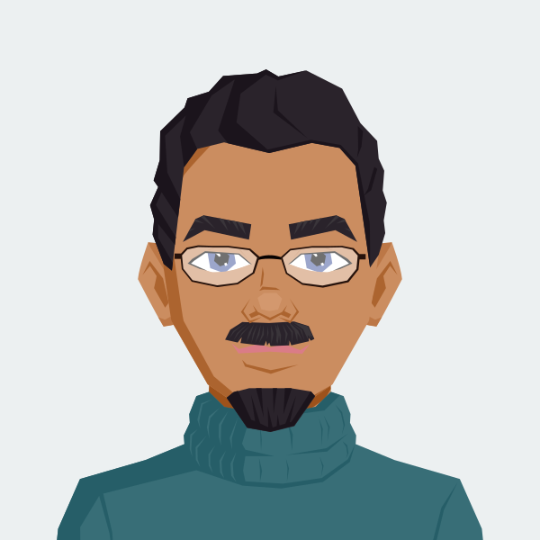
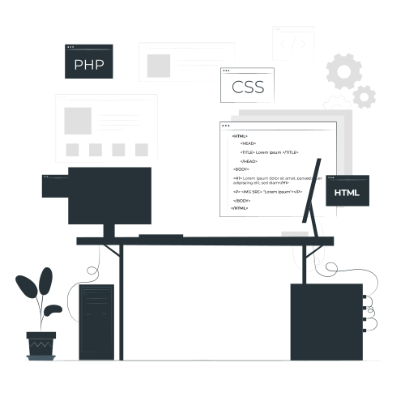

Full-Stack Developer
React, Node.JS and REST


Hello, I'm Juda Osai.
I love working with amazing people to solve interesting problems.
I am always looking to learn new things and apply my existing software development, architecture, and potentially team-building skills.

Contact Me
As a seasoned software engineer, I bring a wealth of expertise in coding, problem-solving, and software architecture to the table. I specialize in crafting innovative solutions and am adept at remote collaboration. I'm excited to connect and explore potential collaborations.
© 2023 Juda Osai All Rights Reserved.